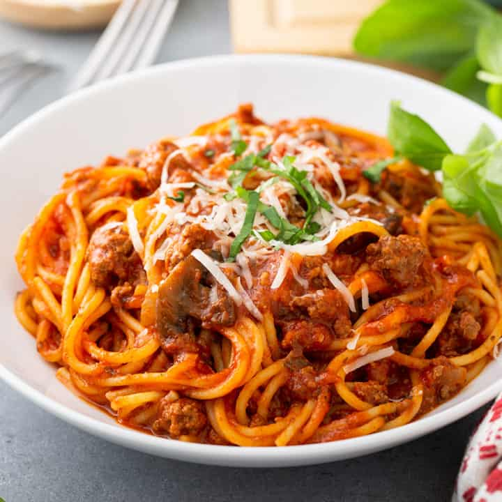

DormDishes Spaghetti
A classic pasta meal that anyone would enjoy in the evening. Freeze for later!
Serves 4, 15 mins cooking time

Ingredients:
- 2 tbsp oil
- 1 chopped onion
- 450g beef mince
- 1 tbsp dried oregano
- 800g chopped tinned tomatoes
- 3 cloved of garlic
- 2 tbsp tomato puree
- Salt and pepper to taste
- 250g spaghetti
- Optional: Grated cheese on top when serving
If you are a UK student, this beef mince is highly reccomended, or any beef mince with 15-20% fat!
Lets cook!
- Heat the oil in a pan over medium heat and add the onions. Stir until cooked
- Add the garlic and cook for another minute
- Then, add the beef mince. Stir well and get the mince as small as possible
- Fry until the mince is fully cooked and browned well, before adding the tomato puree and oregano
- Next, add the tomatoes, parsley and salt and pepper
- Leave to simmmer for a few minutes and serve!
All done with this recipe? How about another?